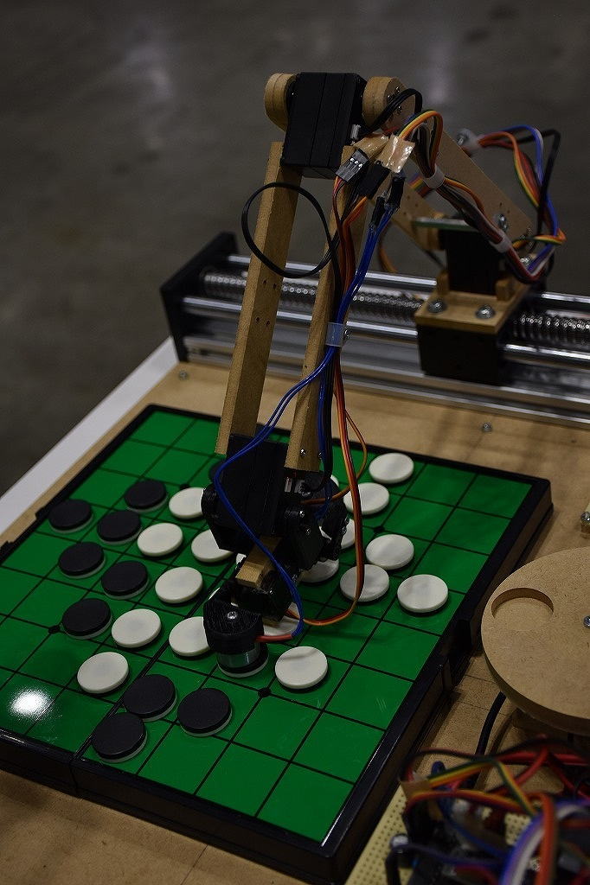

EdgeTech+ 2022
Maker Faire Tokyo Branch Version (2022)
Exhibited as a member of Maker Faire Tokyo Branch Version at O'Reilly Japan's booth.
I exhibited Isevot, Computer Othello, Egaroucid, Retro Othello AI.



Details
Date: 2022/11/16-18
Place: Pacifico Yokohama